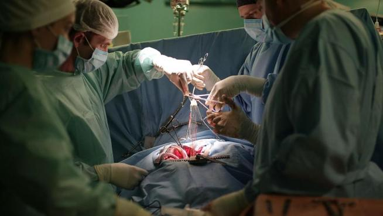

Mi opinión sobre el trasplante y la fabricación del corazón es que son avances médicos y tecnológicos impresionantes que ofrecen esperanza y oportunidades para mejorar la calidad de vida de los pacientes con enfermedades cardíacas. El trasplante de corazón ha demostrado ser una opción efectiva para aquellos cuyos corazones están gravemente dañados. Por otro lado, la fabricación de corazones artificiales, especialmente a través de la impresión 3D, muestra un potencial prometedor para superar las limitaciones de los trasplantes, como la falta de donantes. Sin embargo, es importante seguir investigando y mejorando estas técnicas para garantizar su seguridad, eficacia y accesibilidad. En última instancia, el objetivo debe ser brindar soluciones médicas que salven vidas y mejoren la salud cardiovascular de las personas.
